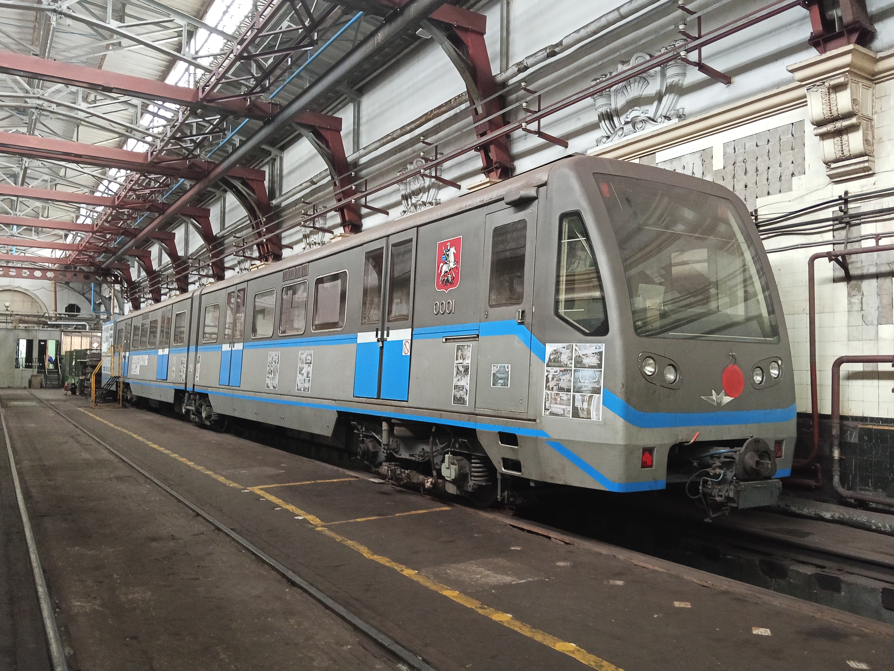

81-740/741 «Русич»
«Русич» (первоначальное название опытного состава — «Скиф») — модель электровагонов метрополитена, серийно выпускавшаяся заводом ОАО «Метровагонмаш» с 2003 по 2013 год.
Изначально проектировался для «лёгкого метро» (Бутовская линия) с укороченными платформами. Из-за нестандартной конструкции (секции вместо цельных вагонов) и малого числа дверей модель критиковалась специалистами при эксплуатации на загруженных линиях.
Общая информация
| Параметр | Значение |
|---|---|
| Главный конструктор | Алексей Колесин |
| Годы постройки | 2002 (опытный), 2003–2013 (серийные) |
| Производитель | ОАО «Метровагонмаш» (Трансмашхолдинг) |
| Тип токосъёма | Нижний боковой контактный рельс |
| Напряжение | 750 В постоянного тока |
| Композиция состава | Мг + 1..3×Мп + Мг (от 2 до 5 вагонов) |
| Длина вагона | 28150 мм (головной) / 27200 мм (промежуточный) |
| Ширина | 2700 мм |
| Высота | 3581 / 3651 мм |
| Ширина колеи | 1520 мм (Москва, Казань) / 1435 мм (София) |
| Мощность ТЭД | 4×160 (4×170) кВт |
| Макс. скорость | 90 км/ч |
| Система тяги | Асинхронный привод КАТП-1 |
Основные модификации
81-740/741 (Базовая)
Опытная и ранняя серийная версия. Комплекты электрооборудования ONIX (Alstom). Боковые окна имели 8 форточек, торцевые — глухие. По 4 двери с каждой стороны.
81-740.1/741.1
Самая массовая версия для Москвы. Электрооборудование КАТП-1. Улучшенная система вентиляции, светодиодные светильники. На части составов — именное оформление («Акварель», «Поэзия в метро»).
81-740.4/741.4
Версия для загруженных линий. Три двери на секцию (вместо двух) для ускорения посадки-высадки. Впервые в истории ММ получила салонные кондиционеры (HVAC).
История
Опытный «Скиф»
Изготовлен опытный состав из двух головных вагонов (0001 и 0002). Проходил испытания на кольце ВНИИЖТа и линиях метро.
Начало пассажирской эксплуатации
Трёхвагонные составы «Русич» вышли на Бутовскую линию («лёгкое метро»).
Выход на АПЛ и Филёвскую линию
Из-за нереализованных планов лёгкого метро составы начали ставить на классические линии. Выяснилось, что из-за малого числа дверей они не справляются с пассажиропотоком.
Создание модификации .4
Разработана версия с тремя дверями на секцию и кондиционерами специально для загруженной Арбатско-Покровской линии.
Крупнейшая катастрофа
На перегоне «Парк Победы» — «Славянский бульвар» состав 81-740.4/741.4 сошёл с рельсов и врезался в стену тоннеля. Погибли 24 человека, более 200 пострадали.
Переход на Сокольническую линию
Составы начали эксплуатироваться на Сокольнической линии (в том числе в пятивагонной составности).
Преимущества и недостатки
✅ Преимущества
- Обогрев: разрабатывался для открытых участков, поэтому зимой в салоне тепло.
- Низкий уровень шума: шумоизоляция значительно лучше, чем у старых серий (50-60 дБ против 80-90 дБ).
- Плавный ход: пневморессоры и асинхронный привод обеспечивают мягкость.
- Информирование: бегущие строки, схемы линии над дверьми, наружные индикаторы закрытия дверей.
❌ Недостатки
- Вентиляция: малоэффективна, воздух подается неравномерно. Кондиционеры в .4 не решили проблему полностью.
- Шум колодок: композитные колодки ФРИТЕКС создают сильный скрип.
- Эргономика: поручни выше, сиденья ниже, из-за чего сидящим приходится выставлять колени вперёд.
- Вибрации: ощутимые колебания в районе узла сочленения («гармошки») при прохождении стыков.
- Мало дверей (в базовых версиях): приводит к давке на загруженных линиях.
Фотогалерея

📌 Станция «Волоколамская».
Состав на платформе.

📌 ТЧ-3 «Измайлово».
Головной вагон 81-740 № 0001.

📌 Кольцевая линия.
Версия с тремя дверями.
Нажмите на фото для увеличения
«"Русич" стал смелым экспериментом, породившим много споров. Созданный для "лёгкого метро", он оказался на самых загруженных линиях, но именно он открыл эру сочленённых поездов и асинхронного привода в Московском метрополитене».